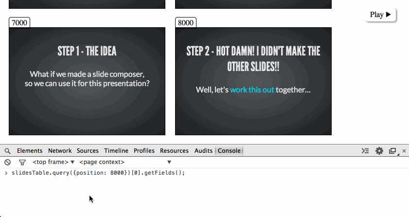
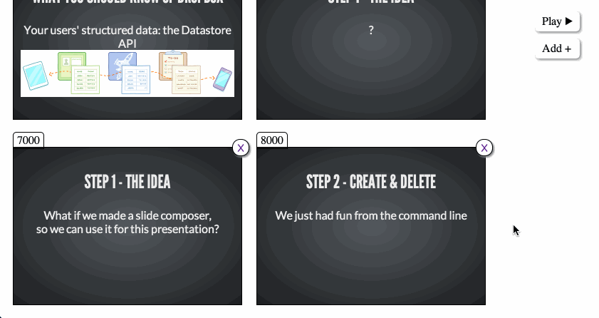
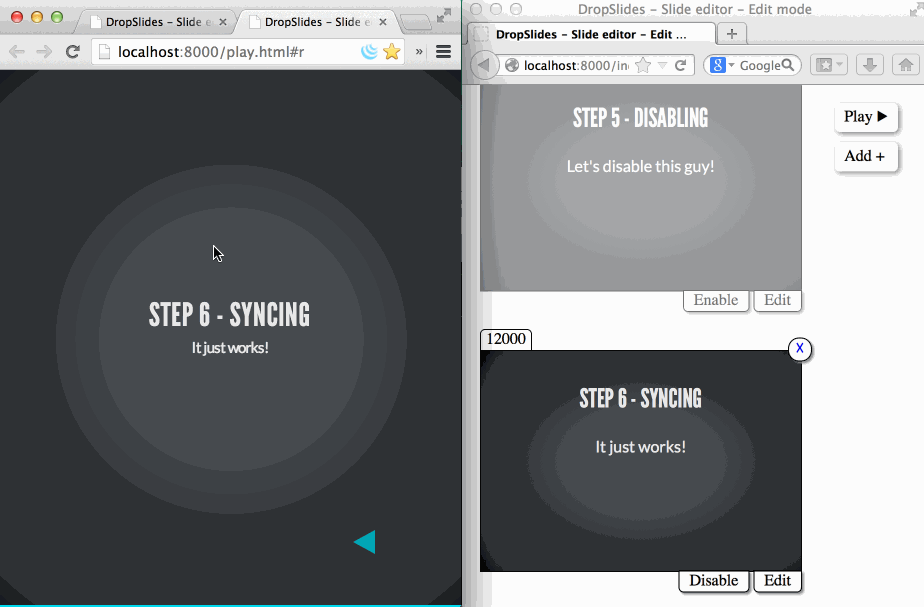

30 minutes to build something
cool and useful
… with the awesome Dropbox Datastore API!
A meta-talk by @RudyRigot

What you know of Dropbox
Our users' file-system for the internet
What you probably know of Dropbox
Your users\' file-system for the internet: the Dropbox Core API
What you should know of Dropbox
Your users' structured data: the Datastore API
Step 1 - the idea
?
Step 1 - the idea
What if we made a slide composer,
so we can use it for this presentation?
Step 2 - Deleting and inserting

Step 3 - Deleting and inserting (UI)

Step 4 - Updating from the UI

Step 5 - Disabling

Step 6 - Syncing

Step 7 - Offline
